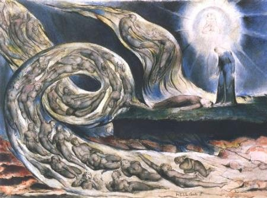
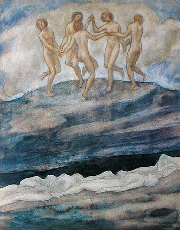
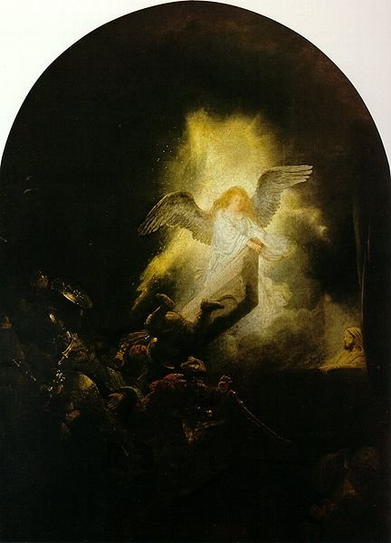

|
| Sun Myung Moon Uppenbarelsen!
Jesus Kristus 1960 1936 sedan 2000 år... |
Återkomsten av Messias! |

6 Febr 2003
Låt oss vara glada och jublaoch ge honom äran.
Ty Lammets bröllop har kommit,
och hans brud har gjort sig redo.
(Upp 19:7)
Hela uppenbarelsen "Principerna" på svenska (lämplig för utskrift)
ÅTERUPPSTÅNDELSEN
Om vi nu skall acceptera alla Bibelns profetior bokstavligt så måste vi ju tro på möjligheten att vid Herrens återkomst, så skall alla helgons begravda och förmultnade ben återställas till det ursprungliga tillstånd de hade i livet, (1 Tess 4:16, Matt 27:52).
Men kan vi verkligen tro på detta ?
För att kunna svara på denna fråga, låt oss först undersöka den sanna betydelsen av återuppståndelse.
Betydelsen av återuppståndelse.
Ordet återuppstå betyder att komma tillbaks till liv.
Så låt oss förstå meningen med att vara död och att leva.
I Luk 9:60 läser vi att Jesus svarade en lärjunge som först ville gå och begrava sin far, "Låt de döda begrava sina döda". I dessa Jesu ord finner vi två olika betydelser av liv och död. Den första betydelsen gäller människans fysiska död. Den andra gäller de som fysiskt lever men är andligt döda. Varför antydde Jesus att dessa levande människor var "döda" ? Det var därför att trots att de fysiskt levde, så var de fortfarande döda i sin kunskap om Gud, källan till liv. De hade förlorat syftet med livet. De var under satans makt.
Upp 3:1 säger, "det heter om dig att du lever, men du är död...". Detta uttrycker klart att alla människor under satans herravälde är döda. På detta sätt betyder liv och död om man uppnått det tillstånd av liv som Gud hade åsyftat, inom ramen för Guds herravälde. Därför läser vi i Joh 11:25, "...Den som tror på mig skall leva om han än dör." Den som tror på Jesus och lever i Guds herravälde, han lever oavsett om han är på jorden eller i den andliga världen, med eller utan sin fysiska kropp.
Av de två sorters död vi talat om, låt oss undersöka vilken död som syndafallet förde med sig. Eftersom återuppståndelse endast har blivit nödvändigt på grund av att fallet ledde till döden. Som tydligt är från kapitlet om skapelsens princip så finns det ingen fysisk varelse skapad att leva för evigt, inklusive människans fysiska kropp, som när den blir gammal skall återvända till jorden. Om människan skapats för evigt liv på jorden, så fanns ju ingen mening med en osynlig andlig värld. Den andliga världen skapades absolut inte efter fallet för att fallna människors andar skall leva där.
Också 1 Mos 2:17 säger att efter det Gud skapat Adam och Eva, så gav han dem budet att inte äta av frukten, ty den dagen skulle de döden dö. Denna död är inte fysisk död, eftersom Adam levde i 930 år efter att de ätit av frukten, enligt Bibeln. Men ändå så dog Adam och Eva i samma ögonblick de bröt mot Guds bud. Att lämna livets herre och hans kärleks rike och falla under satans herravälde betyder döden. Bibeln säger, "...Den som inte älskar är kvar i döden," (1 Joh 3:14) och "Syndens lön är döden, men Guds gåva är evigt liv ..." (Rom 6:23). Nu kan vi förstå att den död som syndafallet förde med sig var att avskiljas från Gud och vandra i synd. Låt oss nu dra slutsatsen om betydelsen av återuppståndelse. Om fallet inte medförde fysisk död och förruttnelse, då kan ju inte heller återuppståndelse betyda att de fysiskt döda skall uppstå ur sina gravar. återuppståndelse måste istället betyda den process att människor som på grund av fallet står under satans makt skall återupprättas till att stå under Guds makt. därför är det skrivet i Joh 5:24, "...den som hör mitt ord och tror på honom som har sänt mig, han har evigt liv. han faller inte under domen, utan har övergått från döden till livet." Detta betyder att övergå från död till liv är att återuppstå. Och att det börjar med tron på Gud och att ta emot Jesu ord. I sken av detta förstår vi att vi inte skall vänta några dramatiska yttre förändringar. Även om skillnaden i tillståndet hos Adam och Eva före och efter fallet var som mellan liv och död, så skedde ändå ingen synlig fysisk förändring hos dom. På samma sätt syns ingen yttre skillnad mellan en som nått evigt liv med hjälp av den helige ande och en tjuv som fortfarande står under dödens makt.
Tron på att de döda skall uppstå fysiskt ur sina gravar kommer från verser som Matt 27:52-53, "... och gravarna öppnade sig. Många kroppar av avlidna heliga uppväcktes. Och efter hans uppståndelse lämnade de sina gravar och gick in i den heliga staden och kunde ses av många." Men om detta verkligen hänt fysiskt, då skulle ju de första kristna aldrig blivit så förföljda. Även om Israels folk förkastade och korsfäste Jesus, så om de sedan kunnat se en mängd kroppar stiga upp ur sina gravar och höra deras vittnesbörd att Jesus var Messias, hur kunde de då förneka honom ? Och dessutom förfölja Jesu efterföljare, de kristna ?
Dessutom om uppståndelse betyder evigt liv, skulle vi då inte kunna se dessa uppståndna helgon också idag. Till exempel de fyra större och tolv mindre profeterna ur Gamla Testamentet ? Och om detta vore möjligt, så hade väl dessa predikat över hela världen och deras gärningar varit upptecknade i Nya Testamentet. Men det enda som skrivits om deras uppståndelse är just detta avsnitt i Matteusevangeliet.
Om vi förstår den verkliga betydelsen av återuppståndelse så förklarar det allt detta. Eftersom återuppståndelse inte gäller den fysiska kroppen, så kan heller ingen fysisk uppståndelse skett av helgonen i Matteusevangeliet. Istället var det deras andliga kroppar som genom Guds nåd blev återuppståndna för att komma närmare fullkomlighet. Därför var de endast synliga för de som fått den helige ande. Andra människor med endast fysiska ögon kunde inte se dessa andliga varelser.

Whirlwind of Lovers /William Blake
Återuppståndelse.
Eftersom återuppståndelse betyder de händelser då fallna människor återupprättar sin ursprungliga natur, så betyder återuppståndelse detsamma som återupprättelse. Och eftersom återupprättelse är detsamma som återskapande så betyder återuppståndelse också återskapande. Enligt skapelsens princip så sker återuppståndelsen på följande sätt.
För att först uppfylla syftet med skapelsen så måste människan lyda de bud som Gud gav som människans ansvar. Därför fick människan ordet i Gamla och Nya Testamentet. Och hon skall få hela ordet som utlovat vid Herrens återkomst. Så löftet om återuppståndelse uppfylls genom att Gud ger ut sanningen och att människan uppfyller sitt ansvar genom att tro på den.
För det andra, så skulle enligt Skapelsens princip den andliga människan växa och bli fullkomlig endast genom den fysiska kroppen. Så återuppståndelsen av den andliga kroppen skall också ske genom det fysiska livet på jorden. Fram till nu trodde man att återuppståndelse var begränsad till den andliga kroppen i den andliga världen. Men detta är helt fel. Historien visar hur Gud gav människan sitt ord, sände sina profeter och genomförde sitt löfte om återuppståndelse, allt här på jorden.
För det tredje, enligt Skapelsen princip så skapades människan för att bli fullkomlig genom att gå igenom de tre tillväxtstegen.
För det fjärde, alltmedan Gud har genomfört sin frälsningsplan på jorden, så har all den tro och lojalitet som Guds tidigare centralfigurer satt, ackumulerats som ett villkor här på jorden. Därför ärver kommande generationer dessa villkor och kan dra fördel av dessa tidigare uppnådda resultat. Med andra ord, de kan dra fördelar av den tidsepok de lever i. Löftet om återuppståndelse utförs således enligt tidsålderns fördelar och uppnådda resultat.
Återuppståndelsen av den fysiska människan.
Med mänskliga ögon så verkar historien bestå av att ersätta en generation med nästa. Men med Guds ögon sett så är historien en outtröttlig strävan att återupprätta den döde Adam till liv, utan tanke på mänskliga generationer.
Om människans förfader Adam inte fallit utan mognat ordentligt igenom tillväxtperioden, så hade han nått fullkomlighet i sin ande som utvecklats i de tre stegen formande, livsande och gudomlig ande. Eftersom människan föll från toppen av tillväxtsteget, så förföll hennes ande, och genom att hon mottog onda element från ärkeängeln så föll hon långt under lägsta nivån på formationssteget. Därför lade Gud en grund, efter fallet där Han kunde ge människan Ordet och därmed börja arbetet med återupprättelsen, som skulle fullbordas i framtiden. Denna period att lägga grunden förlängdes från Adam till Abraham.
På denna grund började Gud utformningssteget i återupprättelsen genom lagen i Gamla Testamentet. Detta utformningssteg varade från Abraham till Jesus. Den tidens folk kunde nå upp till formandens nivå genom att tro på och leva efter Guds ord i Gamla Testamentet.
Genom Jesu korsfästelse så blev återuppståndelsen ouppfylld och den har förlängts till tiden för Herrens återkomst. Tiden från Jesus till Herrens återkomst motsvarar tillväxtsteget i återuppståndelsen. Under denna period kunde människan nå upp till nivån hos livsanden, om hon trodde på Guds ord dvs. evangeliet i Nya Testamentet.
Efter Herrens återkomst, så kommer både kropp och ande att kunna återuppstå. Detta är fullkomlighetssteget i återuppståndelsen. Den återkomne herren är den som kommer med hela sanningen, som uppfyller både Gamla och Nya Testamentet. Denna nya sanning kallas Det Fullbordade Testamentet. Genom dessa ord kan människan på jorden nå fullkomlighet och få en gudomlig ande.

Harmony at the Peak.../Kalil Gibran
Återuppståndelsen av den andliga människan.
Men hur skall då de som nu lever i den andliga världen och aldrig uppnådde fullkomlighet kunna återuppstå ? Den andliga människan kan varken växa eller återuppstå utan en fysisk kropp. Därför måste de återvända till jorden och uppfylla det ansvar de lämnat ouppfyllt. Genom att samarbeta med människor på jorden och hjälpa dem att uppfylla sin mission. Det är därför Jud 1:14 säger att i de yttersta dagarna skall Herren komma med sina "tusentals heliga".
På vilket sätt samarbetar en andlig människa med en jordisk för att uppfylla Guds vilja ? När en människa blir objekt för en viss andlig människa så kan den andliga arbeta genom henne. Genom att hälla över henne andlig eld. Ge henne kraften att bota sjuka, ta emot uppenbarelser eller hjälpa andra att få en djup förståelse av sanningen och andra gärningar.
Ett exempel från Bibeln, Matt 17:3 säger att Elias ande visade sig för Jesus. Så det är helt klart att Elias levde i den andliga världen just då. Men Matt. 17:12 säger ju att Johannes Döparen, som levde på jorden, var Elias. Detta måste betyda att Elias sänkte sig till Johannes Döparen och samarbetade med honom för att uppfylla den mission som han lämnat ouppfylld på jorden. Sett utifrån sin mission så var Johannes Döparen Elias. På samma sätt var Johannes fysiska kropp en ersättning för Elias.
I Hebr 11:39-40 läser vi, "Ingen av dessa (Gamla Testamentets helgon) som genom sin tro har fått Guds vittnesbörd fick se löftet uppfyllas (att få gå in i Himmelriket). Gud har förutbestämt något bättre (Himmelriket) åt oss (jordiska människor) och därför skall de (i andliga världen) uppnå fullkomligheten först tillsammans med oss.
Detta visar att utan samarbete med jordiska människor så kan inte människor i andliga världen bli fullkomliga.
Således kan andliga människor bara återuppstå genom att komma ner till jorden och samarbeta med fysiska människor och uppnå fullkomlighet genom dom.
I denna tid kommer inte bara goda andevarelser utan också jordbundna och onda andar ner. När deras inflytande bidrar till gottgörelsen i den nya försynen (planen) tar de också emot nyttan från denna tidsålder. Därför blir andliga fenomen allt vanligare, särskilt besatthet.
Den snabba ökningen av sinnessjukdomar och andra fall av avvikande beteende är resultatet av andlig besatthet och tvångsföreställningar. Genom att förstå Principen kan man särskilja andarna och kontrollera dem. Om man inte vet, varför och hur de arbetar kan man bli vilseledd och ett offer för andlig besatthet.
slut på Principen om återuppståndelse.

Rembrandt återuppståndelsen 1635/1639
Andra källor:
Ref: Ford 1965
Citat:"men nästan varje människa går och bär på vad psykiater skulle kalla
tvångstankar, medan Moon bestämt säger att det är en ande som besätter henne. Det kan vara för ett kort
ögonblick eller för hela livet. Det beror helt på hur hängiven personen
är och den uppgift som skall förverkligas."
Individual Preparation For His Coming Kingdom, Principle of Resurrection by Sang Chul (David) Kim
Examples from our Age by Farley Jones and Carl Rapkins